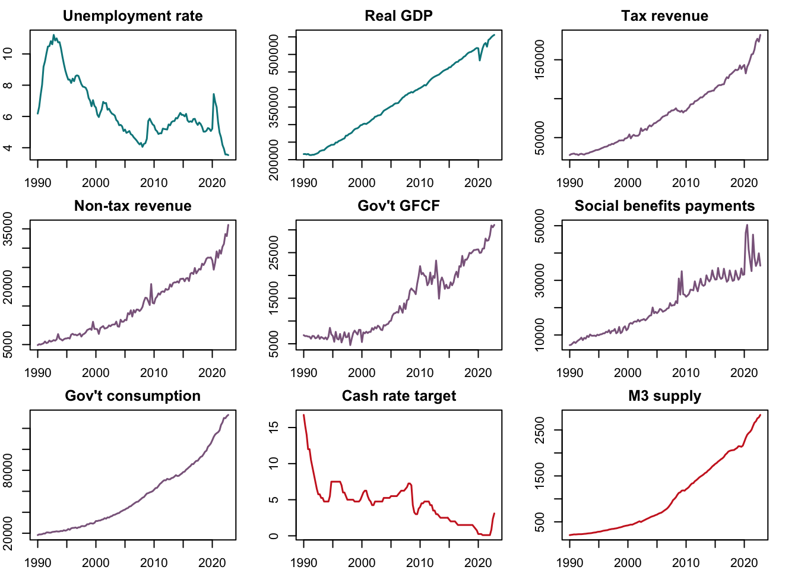

Effects of Fiscal Policy on Unemployment and Output in Australia: a Bayesian SVAR Approach
Abstract. This proposed study attempts to estimate the effects of fiscal policy instruments on unemployment and output in Australia, using a Bayesian Structural Vector Autoregression (BSVAR) model which accounts for heightened volatility due to the COVID-19 pandemic. Impulse response functions are used for measuring these effects.
Keywords. Fiscal policy, unemployment, GDP, Australia impulse response, COVID-19, bsvars, R
Introduction
In many countries, fiscal policy is viewed as a direct means of achieving inclusive development objectives, frequently articulated as twin goals of sustained growth and low poverty (often achieved through low unemployment). However, fiscal policy shocks often occur in multifaceted ways, with simultaneous changes in both revenue and expenditure-side elements of the fiscal balance, making it difficult to disentangle the effects of any one particular policy shock.
This study attempts to identify the effect of the following fiscal policy instrument: tax policy, public investment expenditures, and social transfers, on both unemployment and output in the Australian context, using a Bayesian Structural Vector Autoregression (BSVAR) approach.
The analysis is guided by the work of Abubakar, Attahir B. (2016), which used an SVAR approach to estimate the effect of public expenditures and public revenues on Nigerian output and unemployment and Lenza & Primiceri (2020) which proposes an estimation procedure for VARs after the COVID-19 pandemic. This study extends their work by using a more extensive dataset, containing more disaggregated revenue and expenditure variables, the inclusion of monetary policy control variables, and applying the COVID volatility model into a structural analysis.
Data sources
Quarterly data from Q1 1990 to Q4 2022 was sourced from the Australian Bureau of Statistics (ABS) and the Reserve Bank of Australia (RBA) and extracted using the readabs and readrba packages in R.
Unemployment rate and nominal GDP data are viewed as the outcome variables while tax revenue, public gross fixed capital formation (i.e., public investment) and government social assistance payments (i.e., social subsidies) are the explanatory variables of interest. Government final consumption is included to control for the effects of less productive, more routine government spending. Lastly, non-tax revenue (which, arguably, have a less distortionary effect on markets compared to taxes) and monetary policy reflected through the cash rate target and M3 money supply are also controlled for to mitigate omitted variable issues.
Outcome variables:
- Unemployment rate and nominal GDP
Explanatory variables of interest
Revenue: Tax revenue
Spending: Public gross fixed capital formation and social assistance payments
Control variables:
- Other fiscal policies: non-tax (gross income less tax) revenue, government final consumption
- Monetary policy: cash rate target and M3 money supply
- External sector: real exchange rate
Table 1. Data from ABS and RBA
As seen in the figures below, Australian GDP output has been on a relatively steady, upward trend since 1990, along with fiscal revenue and spending. These have, by and large, been accommodated by declining interest rates and an expanding money supply. Overall, these have been associated with a downward, albeit volatile trajectory in the unemployment rate. Currently, the data is left in original, seasonally-unadjusted form as the variable for social benefit payments does not have a seasonally-adjusted version in the ABS website. As such, some seasonal variation between quarters can be observed in time series plots. However, the final version of the data to be used will be determined after further exploration. Lastly, the data will be transformed into natural log terms during the analysis as to interpret the coefficients in the structural matrix as elasticities.
Figure 1. Time series plots: 1990 Q1 to 2022 Q4, original values

Preliminary data analysis
ACF and PACF analysis
Across variables (which have been transformed into natural log terms), ACF plots show a strong, positive, and gradually decaying autocorrelation structure. Moreover various PACF plots indicate a near-one value at the first lag and much lower, mostly statistically zero values at higher lag orders (such as in nominal GDP, social benefits payments, government consumption, and M3). These characteristics may indicate that some variables may be following a random walk with drift process and as such may be unit-root non-stationary.
Figure 2.1. Autocorrelation function (ACF) plots of variables in log terms

Figure 2.2. Partial autocorrelation function (PACF) plots of variables in log terms

Augmented Dickey-Fuller test for unit roots
# function to implement the Ng and Perron (1998) ADF test procedure
ngperronADF <- function(y){
T <- length(y)
kmax <- ceiling(12*(((T-25)/100)^(1/4)))
k <- kmax + 1
# run test regression until t-statistic of kth lag > 1.6
t <- 0
while(abs(t) < 1.6){
k <- k - 1
adft <- ur.df(y, type = "drift", lags = k)
t <- as.numeric(adft@testreg$coefficients[k+2,][3])
}
adft_k <-ur.df(y, type = "drift", lags = k)
teststat <- adft_k@teststat[2]
cval <- adft_k@cval[2,2]
sig <- abs(teststat)>abs(cval)
return(list("stat" = teststat,"crit" = cval,"reject" = sig))
}Table 2. ADF test results: levels, first, and second difference
Augmented Dickey-Fuller tests following the maximum lag-setting procedure of Ng and Perron (1998) were performed on all nine variables to determine stationarity and orders of integration. The null hypothesis that a unit roots exists was rejected for ADF tests on levels of tax revenue, non-tax revenue, social benefits payments, government consumption, and M3 supply, indicating that these variables do not have a unit-root, and may be following trend-stationary autoregressive processes. Meanwhile, the first differences of the unemployment rate, government GFCF, and cash rate target variables yielded a significant ADF test result, indicating that these have order of integration of 1. Lastly, it took another differencing for nominal GDP to yield a significant result, indicating an order of integration of 2. Further analysis of these variables, including a better-calibrated ADF test and cointegration tests will be performed in the future.
Model specification
The use of fiscal policy to stimulate or regulate the economy follows the Keynesian approach generally practiced around the world (but especially in developing countries) to navigate economies through downturns or potential episodes of overheating, particularly in the short-run. The proposed model aims to investigate the effectiveness of these fiscal measures in managing growth and unemployment.
Estimation proceeds through the following reduced form model:
\[ \begin{align} Y &= XA + U\\ U| X &\sim _{iid} MN_{T\times N}( 0, \Sigma, \Omega)\\ \Sigma &= B_0^{-1}B_0^{-1'} \end{align} \] where matrix \(Y\) contains vectors of endogenous variables \(y_t\):
\[y_t=\begin{pmatrix} unemp_t &= \text{unemployment rate} \\ realgdp_t &= \text{real GDP} \\ totaltax_t &= \text{tax revenue} \\ nontax_t &= \text{non-tax revenue} \\ pubinv_t &= \text{government gross fixed capital formation} \\ pubtrans_t &= \text{social assitance and benefits payments} \\ pubcons_t &= \text{government final consumption} \\ cashrate_t &= \text{cash rate target} \\ M3_t &= \text{M3 money supply} \end{pmatrix}\]
and \(B_0^{-1}=B\) is the matrix of contemporaneous effects between variables.
Estimation and identification
Basic model
For the basic model, the column-wise covariance matrix is set as \(\Omega=I_N\). The likelihood function is expressed as:
\[P(Y,X|A,\Sigma) \propto det(\Sigma)^{-\frac{T}{2}} exp \left\{-\frac{1}{2} tr \left[ \Sigma^{-1}(Y-XA)'(Y-XA) \right] \right\}\\\] \[=det(\Sigma)^{-\frac{T}{2}} exp \left\{-\frac{1}{2} tr \left[ \Sigma^{-1}(A-\hat{A})'X'X(A-\hat{A}) \right] \right\} exp \left\{-\frac{1}{2} tr \left[\Sigma^{-1}(Y-X \hat{A})'(Y-X \hat{A}) \right] \right\}\]
where the maximum likelihood estimators are expressed as:
\[\hat{A} = (X'X)^{-1}X'Y \] \[\hat{\Sigma} = \frac{1}{T} (Y-X \hat{A})'(Y-X \hat{A})\]
The prior for \(A\) and \(\Sigma\) is assumed to be a matrix-normal inverse Wishart distribution that follows the Minnesota specification of Doan, Litterman & Sims (1984):
\[p(A,\Sigma) =MNIW(\underline{A},\underline{S},\underline{V},\underline{\nu})\]
\[A|\Sigma\sim MN_{K\times N}(\underline{A},\Sigma,\underline{V})\] \[\Sigma\sim IW_N(\underline{S},\underline{\nu})\]
where:
\[\underline{A} = [0_{N \times 1} \quad I_N \quad 0_{N \times (p-1)N}]'\] \[\underline{V} = diag([\kappa_2 \quad \kappa_1 (p^{-2} \otimes I_N)])\]
This leads to the following posterior distribution, from which the basic reduced form model will be estimated:
\[P(A|Y,X,\Sigma)=MN_{K\times N}(\bar{A},\Sigma,\bar{V})\] \[P(\Sigma|Y,X)=IW_N(\bar{S},\bar{\nu})\\\]
\[\bar{V}=(X'X+\underline{V}^{-1})^{-1}\] \[\bar{A}=\bar{V}(X'Y+\underline{V}^{-1}\underline{A})\] \[\bar{\nu}=T+\underline{\nu}\] \[\bar{S}=\underline{S}+Y'Y+\underline{A}'\underline{V}^{-1}\underline{A}- \bar{A}'\bar{V}^{-1}\bar{A}\]
Extended model
For the extended model, the column-wise covariance matrix is set to \(\Omega=\text{diag}(H^2)\), where \(H\) is a vector of COVID volatility variables:
\[H=[1\quad...\quad1 \quad h_0\quad h_1\quad h_2\quad 1+(h_2-1)\rho\quad 1+(h_2-1)\rho^2\quad...]'\]
Intuitively, volatility variables for periods before COVID are set to unity. Heightened volatility during the first three quarters of COVID are parameterized, before they are assumed to decay gradually beginning at the fourth quarter since the pandemic’s onset.
These COVID volatility parameters \(\theta=(h_0\quad h_1\quad h_2\quad\rho)\) are estimated from their own marginal posterior as proposed by Lenza & Primiceri (2020):
\[P(\theta|Y,X,\underline{\gamma})\propto P(Y,X|\theta,\underline{\gamma})P(\theta|\underline{\gamma})\]
where the likelihood function is given as:
\[P(Y,X|\theta,\underline{\gamma})\propto \Bigg(\prod^T_{t=1}h_t^{-N}\Bigg)||\underline{V}||^{\frac{N}{2}}||\underline{S}||^{\frac{\underline{\nu}}{2}}||\tilde{X}'\tilde{X}+\underline{V}^{-1}||^{\frac{N}{2}}\\\]
\[||\underline{S}+\hat{\tilde{E}}'\hat{\tilde{E}}+(\hat{\tilde{A}}-\tilde{Y}+\tilde{X}\underline{A})'\underline{V}^{-1}(\hat{\tilde{A}}-\tilde{Y}+\tilde{X}\underline{A})||^{-\frac{T-p+\underline{\nu}}{2}}\]
where \(\tilde{X}_t=\frac{(1,Y_t,...,Y_{t-p})'}{h_t}\), \(\tilde{\hat{A}}=(\tilde{X}'\tilde{X}-\underline{V}^{-1})^{-1}\), and \(\underline{\gamma}=(\underline{A},\underline{S},\underline{V},\underline{\nu})\)
and the priors are assumed to be: \(h_0,h_1,h_2\sim Pareto(1,1)\) and \(\rho\sim Beta(3,1.5)\)
Sampling from the above posterior is conducted via the following Metropolis MCMC algorithm:
Initialize \(\theta\) at the posterior mode which was located via numerical optimization
Draw candidate \(\theta^{*}\) from \(N_4(\theta^{(s-1)},cW)\), where \(W\) is the inverse Hessian of the negative log posterior of \(\theta\) at the mode, which is also calculated computationally, and \(c\) is a scaling factor.
Set:
\[\theta^{(s)}= \begin{cases} \theta^* & \text{with pr.} \quad \alpha^{(s)} \\ \\ \theta^{(s-1)} & \text{with pr.} \quad 1-\alpha^{(s)} \end{cases}\]
\[\alpha^{(s)} =\text{min}\Big[1,\frac{P(\theta^*|Y,X,\underline{\gamma})}{P(\theta^{(s-1)}|Y,X,\underline{\gamma})}\Big]\]
- Define \(H^{(s)}\) matrix using \(\theta^{(s)}\):
\[H^{(s)}=[1\quad...\quad1 \quad h_0^{(s)}\quad h_1^{(s)}\quad h_2^{(s)}\quad 1+(h_2^{(s)}-1)\rho^{(s)}\quad 1+(h_2^{(s)}-1)\rho^{(s)2}\quad...]'\]
Steps 2 to 4 are repeated \(S_1+S_2\) times and \(S_2\) draws are used to draw \(A\) and \(\Sigma\) from the following posterior distribution:
\[P(A|Y,X,\Sigma,H)=MN_{K\times N}(\bar{A},\Sigma,\bar{V})\] \[P(\Sigma|Y,X,H)=IW_N(\bar{S},\bar{\nu})\\\]
\[\bar{V}=(X'\text{diag}(H^2)X+\underline{V}^{-1})^{-1}\] \[\bar{A}=\bar{V}(X'\text{diag}(H^2)Y+\underline{V}^{-1}\underline{A})^{-1}\] \[\bar{\nu}=T+\underline{\nu}\] \[\bar{S}=\underline{S}+Y'\text{diag}(H^2)Y+\underline{A}'\underline{V}^{-1}\underline{A}- \bar{A}'\bar{V}^{-1}\bar{A}\]
Identification
Sign restrictions are used as the identification strategy for both models.
Given the reduced form model:
\[ \begin{align} Y &= XA + U\\ U| X &\sim _{iid} MN_{T\times N}( 0, \Sigma, \Omega)\\ \end{align} \] For each draw from the reduced form posteriors, the candidate contemporaneous effects matrix is derived as: \[\tilde{B}=\tilde{B}^{-1}_0=\text{chol}(\Sigma)\]
Contemporaneous effects matrix \(B\) is identified by searching for an appropriate rotation matrix \(Q\) such that prescribed sign restrictions hold:
\[B = Q\tilde{B}\]
such that:
\[R_nf(\tilde{B}_0,\tilde{B}_+)e_n\geq0\] \[f(\tilde{B}_0,\tilde{B}_+)=\Phi_0=\tilde{B}^{-1}_0\]
Estimation with artificial data
To check the validity of the algorithms, two independent bi-variate random walk with drift processes were generated to simulate unit-root non-stationary macroeconomic variables.

The estimation procedure for the basic model is implemented in R by the following function, sign.basic:
# data = input data should be quarterly
# p = lags
# S = number of posterior draws
# sign restritions = Nx1 diagonal of R matrix
# k1 = kappa1
# k2 = kappa2, higher value, less shrinkage, more weight on prior
# shockvar = variable being shocked
# start date = start date of Y matrix
sign.basic <- function(data, p, S, sign.restrictions,
k1=0.04, k2=100, start_date = c(1991,1), shockvar){
# Define Y and X matrices
############################################################
# N = no. of variables
N = ncol(data)
# p = no. of lags
K = 1 + p*N
# forecast horizon
# h = 8
Y = ts(data[(p+1):nrow(data),], start=start_date, frequency=4)
X = matrix(1,nrow(Y),1)
# nrow(X)
for (i in 1:p){
X = cbind(X,data[(p+1):nrow(data)-i,])
}
# Calculate MLE
############################################################
A.hat = solve(t(X)%*%X)%*%t(X)%*%Y
Sigma.hat = t(Y-X%*%A.hat)%*%(Y-X%*%A.hat)/nrow(Y)
# round(A.hat,3)
# round(Sigma.hat,3)
# round(cov2cor(Sigma.hat),3)
# Specify prior distribution
############################################################
kappa.1 = k1
kappa.2 = k2
kappa.3 = 1
A.prior = matrix(0,nrow(A.hat),ncol(A.hat))
A.prior[2:(N+1),] = kappa.3*diag(N)
V.prior = diag(c(kappa.2,kappa.1*((1:p)^(-2))%x%rep(1,N)))
S.prior = diag(diag(Sigma.hat))
nu.prior = N+1
# Matrix normal-inverse Wishart posterior parameters
############################################################
V.bar.inv = t(X)%*%X + diag(1/diag(V.prior))
V.bar = solve(V.bar.inv)
A.bar = V.bar%*%(t(X)%*%Y + diag(1/diag(V.prior))%*%A.prior)
nu.bar = nrow(Y) + nu.prior
S.bar = S.prior + t(Y)%*%Y + t(A.prior)%*%diag(1/diag(V.prior))%*%A.prior - t(A.bar)%*%V.bar.inv%*%A.bar
S.bar.inv = solve(S.bar)
# Posterior draws
############################################################
# Draws from RF posterior
# Draw Sigma from inverse wishart
Sigma.posterior = rWishart(S, df=nu.bar, Sigma=S.bar.inv)
Sigma.posterior = apply(Sigma.posterior,3,solve)
Sigma.posterior = array(Sigma.posterior,c(N,N,S))
# Draw A from matrix-variate normal
A.posterior = array(rnorm(prod(c(dim(A.bar),S))),c(dim(A.bar),S))
## Draw from SF posterior
B0.posterior = array(NA,c(N,N,S))
Bplus.posterior = array(NA,c(N,K,S))
L = t(chol(V.bar))
for (s in 1:S){
# Draw B0
cholSigma.s = chol(Sigma.posterior[,,s])
B0.posterior[,,s]= solve(t(cholSigma.s))
A.posterior[,,s]= A.bar + L%*%A.posterior[,,s]%*%cholSigma.s
# Draw Bplus
Bplus.posterior[,,s] = B0.posterior[,,s]%*%t(A.posterior[,,s])
}
# Identification via sign restrictions
############################################################
# Generate corresponding R matrix
R1 = diag(sign.restrictions)
# Storage matrices for Q identified estimates
i.vec <- c()
Q.iden = array(NA,c(N,N,S))
B0.iden = array(NA,c(N,N,S))
B1.iden = array(NA,c(N,K,S))
A.iden = array (NA,c(K,N,S))
pb = txtProgressBar(min = 0, max = 100, initial = 0)
for (s in 1:S){
setTxtProgressBar(pb,100*s/S)
#cat(". iteration: ", s, "\n")
# pick-up a B0 from S
B0.tilde <- B0.posterior[,,s]
IR.0.tilde = solve(B0.tilde)
B1.tilde = Bplus.posterior[,,s]
#IR.1.tilde = solve(B0.tilde)%*%B1.tilde%*%solve(B0.tilde)
# Search for appropriate Q
sign.restrictions.do.not.hold = TRUE
i=1
while (sign.restrictions.do.not.hold){
X = matrix(rnorm(N^2),N,N)
QR = qr(X, tol = 1e-10)
Q = qr.Q(QR,complete=TRUE)
R = qr.R(QR,complete=TRUE)
Q = t(Q %*% diag(sign(diag(R))))
B0 = Q%*%B0.tilde
B1 = Q%*%B1.tilde
B0.inv = solve(B0)
check = prod(R1 %*% B0.inv %*% diag(N)[,shockvar] >= 0)
A = t(solve(B0)%*%B1)
if (check==1){sign.restrictions.do.not.hold=FALSE}
i=i+1
}
i.vec <- c(i.vec, i)
Q.iden[,,s] <- Q
B0.iden[,,s] <- B0
B0.mean <- apply(B0.iden,1:2,mean)
B1.iden[,,s] <- B1
B1.mean <- apply(B1.iden,1:2,mean)
A.iden[,,s] <- A
A.mean <- apply(A.iden,1:2,mean)
}
re <- list("i" = i.vec, "Q" = Q.iden, "B0"= B0.iden, "B0.mean" = B0.mean,
"Bplus"= B1.iden, "Bplus.mean" = B1.mean, "A" = A.iden, "A.mean" = A,
"A.posterior"=A.posterior, "Sigma.posterior"=Sigma.posterior)
return(re)
}Applying the sign.basic function on the artificial returns the following matrices as estimates for the posterior means of \(A\) and \(\Sigma\). These results are appropriate given the independent bivariate random walk with drift proceses:
================================================================================Estimating the extended model involved designing three functions in R:
v.posterior.modetakes in the data and numerically computes for the posterior mode of \(\theta\), i.e., COVID volatility parameters;
v.posterior.mode <- function(data, p=4, k1=1, k2=100, start_date=c(1991,1)){
v.neglogPost <- function(theta){
N = ncol(data)
# p = no. of lags
K = 1 + p*N
# forecast horizon
# h = 8
Y = ts(data[(p+1):nrow(data),], start=start_date, frequency=4)
T = nrow(Y)
X = matrix(1,T,1)
# nrow(X)
for (i in 1:p){
X = cbind(X,data[(p+1):nrow(data)-i,])
}
# Calculate MLE for prior
############################################################
A.hat = solve(t(X)%*%X)%*%t(X)%*%Y
Sigma.hat = t(Y-X%*%A.hat)%*%(Y-X%*%A.hat)/nrow(Y)
# round(A.hat,3)
# round(Sigma.hat,3)
# round(cov2cor(Sigma.hat),3)
# Specify prior distribution
############################################################
kappa.1 = k1
kappa.2 = k2
kappa.3 = 1
A.prior = matrix(0,nrow(A.hat),ncol(A.hat))
A.prior[2:(N+1),] = kappa.3*diag(N)
V.prior = diag(c(kappa.2,kappa.1*((1:p)^(-2))%x%rep(1,N)))
S.prior = diag(diag(Sigma.hat))
nu.prior = N+1
vec <- theta[1:3]
for (i in 4:12){
vec <- c(vec, 1 + (theta[3]-1)*theta[4]^(i-3))
}
V <- c(ts(rep(1, nrow(Y)-12), c(1991,1), frequency = 4) , vec)
Y.tilde <- diag(1/V)%*%Y
X.tilde <- diag(1/V)%*%X
A.tilde.hat <- solve((t(X.tilde)%*%X.tilde+solve(V.prior)))%*%(t(X.tilde)%*%Y.tilde+solve(V.prior)%*%A.prior)
epsilon.tilde <-Y.tilde - X.tilde%*%A.tilde.hat
# Log-likelihood
logL <- log(prod(V^(-N)))+(-N/2)*log(det(t(X.tilde)%*%X.tilde+solve(V.prior)))+
(-(T-p+nu.prior)/2)*log(det(S.prior +t(epsilon.tilde)%*%epsilon.tilde +
t(A.tilde.hat-A.prior)%*%solve(V.prior)%*%(A.tilde.hat-A.prior)))
# Pareto(1,1) and Beta(3,1.5) priors
pareto.a=1
pareto.b=1
beta.a=3
beta.b=1.5
beta.cons <- 1/beta(beta.a,beta.b)
# Log-prior
logP <- log((pareto.a*pareto.b^pareto.a)/(theta[1]^(pareto.a+1))*
(pareto.a*pareto.b^pareto.a)/(theta[2]^(pareto.a+1))*
(pareto.a*pareto.b^pareto.a)/(theta[3]^(pareto.a+1))*
beta.cons*theta[4]^(beta.a-1)*(1-theta[4])^(beta.b-1))
# negative log-posterior
neglogPost <- -(logL+logP)
return(neglogPost)
}
# numerically minimize the negative log-likelihood
post.maximizer <- optim(par=c(50, 50, 50, 0.5), fn=v.neglogPost, method="L-BFGS-B",
lower=c(1, 1, 1, 0.0001),
upper=c(100,100,100,0.99999), hessian = TRUE)
return(list(maximizer=post.maximizer$par, hessian=post.maximizer$hessian))
}mh.mcmctakes in data, the posterior mode of \(\theta\), and the inverse Hessian fromv.posterior.modeto run the above-mentioned Metropolis MCMC algorithm for a specified number of iterations; and
mh.mcmc <- function(data, p=1, S.mh = 1000, c, W = diag(4), theta.init,
k1 = 1, k2 = 100, start_date = c(1991,1)){
# N = no. of variables
N = ncol(data)
# p = no. of lags
K = 1 + p*N
# forecast horizon
# h = 8
Y = ts(data[(p+1):nrow(data),], start=start_date, frequency=4)
T = nrow(Y)
X = matrix(1,T,1)
# nrow(X)
for (i in 1:p){
X = cbind(X,data[(p+1):nrow(data)-i,])
}
# Calculate MLE for prior
############################################################
A.hat = solve(t(X)%*%X)%*%t(X)%*%Y
Sigma.hat = t(Y-X%*%A.hat)%*%(Y-X%*%A.hat)/nrow(Y)
# round(A.hat,3)
# round(Sigma.hat,3)
# round(cov2cor(Sigma.hat),3)
# Specify prior distribution
############################################################
kappa.1 = k1
kappa.2 = k2
kappa.3 = 1
A.prior = matrix(0,nrow(A.hat),ncol(A.hat))
A.prior[2:(N+1),] = kappa.3*diag(N)
V.prior = diag(c(kappa.2,kappa.1*((1:p)^(-2))%x%rep(1,N)))
S.prior = diag(diag(Sigma.hat))
nu.prior = N+1
# Metropolis-Hastings
###########################################################
# v0, v1, v2, rho
Theta <- matrix(NA,S.mh,4)
theta_old <- theta.init
#theta_old <- Theta[nrow(Theta),]
# W <- diag(4)
set.seed(1)
pb = txtProgressBar(min = 0, max = S.mh, initial = 0)
for (s in 1:S.mh){
setTxtProgressBar(pb,s)
covid.vec <- function(theta){
vec <- theta[1:3]
for (i in 4:12){
vec <- c(vec, 1 + (theta[3]-1)*theta[4]^(i-3))
}
return(vec)
}
# Covid volatility likelihood kernel
v.logL <- function(V){
Y.tilde <- diag(1/V)%*%Y
X.tilde <- diag(1/V)%*%X
A.tilde.hat <- solve((t(X.tilde)%*%X.tilde+solve(V.prior)))%*%(t(X.tilde)%*%Y.tilde+solve(V.prior)%*%A.prior)
epsilon.tilde <-Y.tilde - X.tilde%*%A.tilde.hat
logL <- log(prod(V^(-N)))+(-N/2)*log(det(t(X.tilde)%*%X.tilde+solve(V.prior)))+
(-(T-p+nu.prior)/2)*log(det(S.prior +t(epsilon.tilde)%*%epsilon.tilde +
t(A.tilde.hat-A.prior)%*%solve(V.prior)%*%(A.tilde.hat-A.prior)))
return(logL)
}
# Covid volatility prior
v.logP <- function(theta, pareto.a=1, pareto.b=1, beta.a=3, beta.b=1.5){
beta.cons <- 1/beta(beta.a,beta.b)
logP <- log((pareto.a*pareto.b^pareto.a)/(theta[1]^(pareto.a+1))*
(pareto.a*pareto.b^pareto.a)/(theta[2]^(pareto.a+1))*
(pareto.a*pareto.b^pareto.a)/(theta[3]^(pareto.a+1))*
beta.cons*theta[4]^(beta.a-1)*(1-theta[4])^(beta.b-1))
return(logP)
}
v_ones <- ts(rep(1, nrow(Y)-12), c(1991,1), frequency = 4)
V.old <- c(v_ones, covid.vec(theta_old))
# New candidate parameters values
theta_new <- mvrnorm(1, theta_old, c*W)
V.new <- c(v_ones, covid.vec(theta_new))
# Calculate posteriors
v.logpost_old <- v.logL(V.old)+v.logP(theta_old)
v.logpost_new <- v.logL(V.new)+v.logP(theta_new)
# Posterior ratio
post.ratio <- exp(v.logpost_new-v.logpost_old)
# Acceptance/rejection alpha
alpha <- min(1, post.ratio)
u_star <- runif(1)
if (alpha > u_star){
Theta[s,] <- theta_new
} else {Theta[s,] <- theta_old}
theta_old <- Theta[s,]
}
colnames(Theta) <- c("h0", "h1" , "h2", "rho")
re <- list(Theta=Theta,
AcceptRate = 1 - rejectionRate(as.mcmc(Theta[,1])))
return(re)
}sign.extensiontakes in data and draws of \(\theta\) frommh.mcmcto return the posterior draws for the extended model.
sign.extension <- function(data, p=4, S=100, sign.restrictions = c(0, 0, 1, 1, 1, -1, 1, -1, 1),
k1=1, k2=100, shockvar = 5, start_date = c(1991,1), Theta.mh){
# N = no. of variables
N = ncol(data)
# p = no. of lags
K = 1 + p*N
# forecast horizon
# h = 8
Y = ts(data[(p+1):nrow(data),], start=start_date, frequency=4)
T = nrow(Y)
X = matrix(1,T,1)
# nrow(X)
for (i in 1:p){
X = cbind(X,data[(p+1):nrow(data)-i,])
}
covid.vec <- function(theta){
vec <- theta[1:3]
for (i in 4:12){
vec <- c(vec, 1 + (theta[3]-1)*theta[4]^(i-3))
}
return(vec)
}
# array of S diag(covid volatility) matrices
diagV.sqinv <- array(NA, c(nrow(Y),nrow(Y),S))
for (s in 1:S){
v_ones <- ts(rep(1, nrow(Y)-12), c(1991,1), frequency = 4)
diagV.sqinv[,,s] <- diag(c(v_ones, covid.vec(Theta.mh[s,]))^(-2))
}
# Calculate MLE for prior
############################################################
A.hat = solve(t(X)%*%X)%*%t(X)%*%Y
Sigma.hat = t(Y-X%*%A.hat)%*%(Y-X%*%A.hat)/nrow(Y)
# round(A.hat,3)
# round(Sigma.hat,3)
# round(cov2cor(Sigma.hat),3)
# Specify prior distribution
############################################################
kappa.1 = k1
kappa.2 = k2
kappa.3 = 1
A.prior = matrix(0,nrow(A.hat),ncol(A.hat))
A.prior[2:(N+1),] = kappa.3*diag(N)
V.prior = diag(c(kappa.2,kappa.1*((1:p)^(-2))%x%rep(1,N)))
S.prior = diag(diag(Sigma.hat))
nu.prior = N+1
# Posterior draws
############################################################
Sigma.posterior = array(NA,c(N,N,S))
A.posterior = array (NA,c(K,N,S))
B0.posterior = array(NA,c(N,N,S))
Bplus.posterior = array(NA,c(N,K,S))
pb = txtProgressBar(min = 0, max = S, initial = 0)
for (s in 1:S){
setTxtProgressBar(pb,s)
V.bar.inv = t(X)%*%diagV.sqinv[,,s]%*%X + diag(1/diag(V.prior))
V.bar = solve(V.bar.inv)
A.bar = V.bar%*%(t(X)%*%diagV.sqinv[,,s]%*%Y + diag(1/diag(V.prior))%*%A.prior)
nu.bar = nrow(Y) + nu.prior
S.bar = S.prior + t(Y)%*%diagV.sqinv[,,s]%*%Y + t(A.prior)%*%diag(1/diag(V.prior))%*%
A.prior - t(A.bar)%*%V.bar.inv%*%A.bar
S.bar.inv = solve(S.bar)
L = t(chol(V.bar))
# RF posterior draws
Sigma.posterior[,,s] <- solve(rWishart(1, df=nu.bar, Sigma=S.bar.inv)[,,1])
cholSigma.s = chol(Sigma.posterior[,,s])
A.posterior[,,s] = matrix(mvrnorm(1,as.vector(A.bar), Sigma.posterior[,,s]%x%V.bar),ncol=N)
A.posterior[,,s]= A.bar + L%*%A.posterior[,,s]%*%cholSigma.s
# SF posterior draws
B0.posterior[,,s]= solve(t(cholSigma.s))
# Draw Bplus
Bplus.posterior[,,s] = B0.posterior[,,s]%*%t(A.posterior[,,s])
}
# Identification via sign restrictions on theta0
############################################################
# generate corresponding R matrix
R1 = diag(sign.restrictions)
# storage matrices for Q identified estimates
i.vec <- c()
Q.iden = array(NA,c(N,N,S))
B0.iden = array(NA,c(N,N,S))
B1.iden = array(NA,c(N,K,S))
A.iden = array (NA,c(K,N,S))
pb = txtProgressBar(min = 0, max = S, initial = 0)
for (s in 1:S){
setTxtProgressBar(pb,s)
# pick-up a B0 from S
B0.tilde <- B0.posterior[,,s]
IR.0.tilde = solve(B0.tilde)
B1.tilde = Bplus.posterior[,,s]
#IR.1.tilde = solve(B0.tilde)%*%B1.tilde%*%solve(B0.tilde)
# Search for appropriate Q
sign.restrictions.do.not.hold = TRUE
i=1
while (sign.restrictions.do.not.hold){
X = matrix(rnorm(N^2),N,N)
QR = qr(X, tol = 1e-10)
Q = qr.Q(QR,complete=TRUE)
R = qr.R(QR,complete=TRUE)
Q = t(Q %*% diag(sign(diag(R))))
B0 = Q%*%B0.tilde
B1 = Q%*%B1.tilde
B0.inv = solve(B0)
check = prod(R1 %*% B0.inv %*% diag(N)[,shockvar] >= 0)
A = t(solve(B0)%*%B1)
if (check==1){sign.restrictions.do.not.hold=FALSE}
i=i+1
}
i.vec <- c(i.vec, i)
Q.iden[,,s] <- Q
B0.iden[,,s] <- B0
B0.mean <- apply(B0.iden,1:2,mean)
B1.iden[,,s] <- B1
B1.mean <- apply(B1.iden,1:2,mean)
A.iden[,,s] <- A
A.mean <- apply(A.iden,1:2,mean)
}
re <- list("i" = i.vec, "Q" = Q.iden, "B0"= B0.iden, "B0.mean" = B0.mean,
"Bplus"= B1.iden, "Bplus.mean" = B1.mean, "A" = A.iden, "A.mean" = A,
"A.posterior"=A.posterior, "Sigma.posterior"=Sigma.posterior, "Theta"= Theta.mh)
return(re)
}Applying v.posterior.mode on the artifcial data yielded a mode of \(\theta^{(s=1)}=(1,1,1,0.8)\) which is appropriate given that there is no COVID volatility in generated random walk series. However, the numerical optimization yielded a non-positive definite Hessian which cannot be used to initialize the Metropolis MCMC. As such, \(W\) was instead set to an identity matrix.
Running mh.mcmc on the artificial data for 15000 iterations yields the following draws. Unfortunately, the MCMC draws failed to converge into a stationary series within these number of iterations.
================================================================================
Nonetheless, using these draws in the estimation procedure implemented by sign.extension still yields correct estimates for \(A\) and \(\Sigma\), as seen in the results below. Note however, memory capacity of the computer used only allowed for 2000 draws for the extended model.
(Note: 10,000 draws is possible for estimation using the actual macroeconomic data given the much fewer observations)
================================================================================================================================================================References
Abubakar, Attahir B. (2016): Dynamic effects of fiscal policy on output and unemployment in Nigeria: An econometric investigation, CBN Journal of Applied Statistics, ISSN 2476-8472, The Central Bank of Nigeria, Abuja, Vol. 07, Iss. 2, pp. 101-122